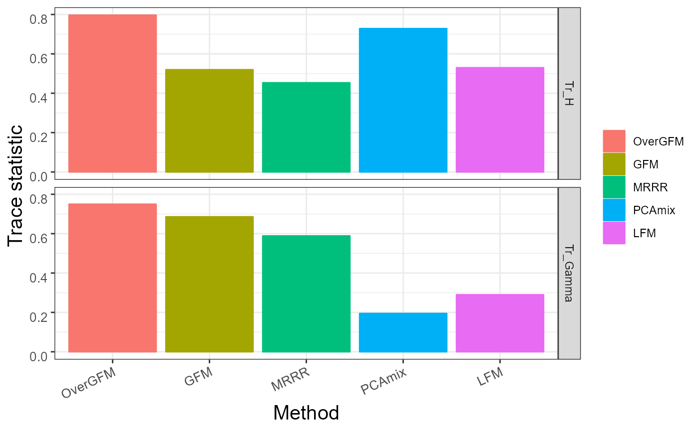

vignettes/OverGFM_exam.Rmd
OverGFM_exam.RmdIn this tutorial, we show the usage of the overdispersed generalized factor model (OverGFM) and compare it with the competitors.
The package can be loaded with the following command:
## Loading required package: doSNOW## Loading required package: foreach## Loading required package: iterators## Loading required package: snow## Loading required package: parallel##
## Attaching package: 'parallel'## The following objects are masked from 'package:snow':
##
## clusterApply, clusterApplyLB, clusterCall, clusterEvalQ,
## clusterExport, clusterMap, clusterSplit, makeCluster, parApply,
## parCapply, parLapply, parRapply, parSapply, splitIndices,
## stopCluster## GFM : Generalized factor model is implemented for ultra-high dimensional data with mixed-type variables.
## Two algorithms, variational EM and alternate maximization, are designed to implement the generalized factor model,
## respectively. The factor matrix and loading matrix together with the number of factors can be well estimated.
## This model can be employed in social and behavioral sciences, economy and finance, and genomics,
## to extract interpretable nonlinear factors. More details can be referred to
## Wei Liu, Huazhen Lin, Shurong Zheng and Jin Liu. (2021) <doi:10.1080/01621459.2021.1999818>. Check out our Package website (https://feiyoung.github.io/GFM/docs/index.html) for a more complete description of the methods and analysesThe rrpack package can be loaded with the following command:
library("rrpack")The PCAmixdata package can be loaded with the following command:
library("PCAmixdata")## Warning: package 'PCAmixdata' was built under R version 4.1.3We define the function with details for the data generation mechanism.
gendata_s2 <- function (seed = 1, n = 500, p = 500,
type = c('homonorm', 'heternorm', 'pois', 'bino', 'norm_pois',
'pois_bino', 'npb'),
q = 6, rho = c(0.05, 0.2, 0.1), n_bin=1, sigma_eps=0.1){
library(MASS)
Diag <- GFM:::Diag
cor.mat <- GFM:::cor.mat
type <- match.arg(type)
rho_gauss <- rho[1]
rho_pois <- rho[2]
rho_binary <- rho[3]
set.seed(seed)
Z <- matrix(rnorm(p * q), p, q)
if (type == "homonorm") {
g1 <- 1:p
Z <- rho_gauss * Z
}else if (type == "heternorm"){
g1 <- 1:p
Z <- rho_gauss * Z
}else if(type == "pois"){
g1 <- 1:p
Z <- rho_pois * Z
}else if(type == 'bino'){
g1 <- 1:p
Z <- rho_binary * Z
}else if (type == "norm_pois") {
g1 <- 1:floor(p/2)
g2 <- (floor(p/2) + 1):p
Z[g1, ] <- rho_gauss * Z[g1, ]
Z[g2, ] <- rho_pois * Z[g2, ]
}else if (type == "pois_bino") {
g1 <- 1:floor(p/2)
g2 <- (floor(p/2) + 1):p
Z[g1, ] <- rho_pois * Z[g1, ]
Z[g2, ] <- rho_binary * Z[g2, ]
}else if(type == 'npb'){
g1 <- 1:floor(p/3)
g2 <- (floor(p/3) + 1):floor(p*2/3)
g3 <- (floor(2*p/3) + 1):p
Z[g1, ] <- rho_gauss * Z[g1, ]
Z[g2, ] <- rho_pois * Z[g2, ]
Z[g3, ] <- rho_binary * Z[g3, ]
}
svdZ <- svd(Z)
B1 <- svdZ$u %*% Diag(svdZ$d[1:q])
B0 <- B1 %*% Diag(sign(B1[1, ]))
mu0 <- 0.4 * rnorm(p)
Bm0 <- cbind(mu0, B0)
set.seed(seed)
H <- mvrnorm(n, mu = rep(0, q), cor.mat(q, 0.5))
svdH <- svd(cov(H))
H0 <- scale(H, scale = F) %*% svdH$u %*% Diag(1/sqrt(svdH$d)) %*%
svdH$v
if (type == "homonorm") {
X <- H0 %*% t(B0) + matrix(mu0, n, p, byrow = T) + mvrnorm(n,
rep(0, p), sigma_eps*diag(p))
group <- rep(1, p)
XList <- list(X)
types <- c("gaussian")
}else if (type == "heternorm") {
sigmas = sigma_eps*(0.1 + 4 * runif(p))
X <- H0 %*% t(B0) + matrix(mu0, n, p, byrow = T) + mvrnorm(n,
rep(0, p), diag(sigmas))
group <- rep(1, p)
XList <- list(X)
types <- c("gaussian")
}else if (type == "pois") {
Eta <- H0 %*% t(B0) + matrix(mu0, n, p, byrow = T) + mvrnorm(n,rep(0, p),
sigma_eps*diag(p))
mu <- exp(Eta)
X <- matrix(rpois(n * p, lambda = mu), n, p)
group <- rep(1, p)
XList <- list(X[,g1])
types <- c("poisson")
}else if(type == 'bino'){
Eta <- cbind(1, H0) %*% t(Bm0[g1, ]) + mvrnorm(n,rep(0, p), sigma_eps*diag(p))
mu <- 1/(1 + exp(-Eta))
X <- matrix(rbinom(prod(dim(mu)), n_bin, mu), n, p)
group <- rep(1, p)
XList <- list(X[,g1])
types <- c("binomial")
}else if (type == "norm_pois") {
Eps <- mvrnorm(n,rep(0, p), sigma_eps*diag(p))
mu1 <- cbind(1, H0) %*% t(Bm0[g1, ]) + Eps[, g1]
mu2 <- exp(cbind(1, H0) %*% t(Bm0[g2, ])+ Eps[, g2])
X <- cbind(matrix(rnorm(prod(dim(mu1)), mu1, 1), n, floor(p/2)),
matrix(rpois(prod(dim(mu2)), mu2), n, ncol(mu2)))
group <- c(rep(1, length(g1)), rep(2, length(g2)))
XList <- list(X[,g1], X[,g2])
types <- c("gaussian", "poisson")
}else if (type == "pois_bino") {
Eps <- mvrnorm(n,rep(0, p), sigma_eps*diag(p))
mu1 <- exp(cbind(1, H0) %*% t(Bm0[g1, ])+ Eps[,g1])
mu2 <- 1/(1 + exp(-cbind(1, H0) %*% t(Bm0[g2, ])- Eps[,g2]))
X <- cbind(matrix(rpois(prod(dim(mu1)), mu1), n, ncol(mu1)),
matrix(rbinom(prod(dim(mu2)), n_bin, mu2), n, ncol(mu2)))
group <- c(rep(1, length(g1)), rep(2, length(g2)))
XList <- list(X[,g1], X[,g2])
types <- c("poisson", 'binomial')
}else if(type == 'npb'){
Eps <- mvrnorm(n,rep(0, p), sigma_eps*diag(p))
mu11 <- cbind(1, H0) %*% t(Bm0[g1, ]) + Eps[,g1]
mu1 <- exp(cbind(1, H0) %*% t(Bm0[g2, ]) + Eps[,g2])
mu2 <- 1/(1 + exp(-cbind(1, H0) %*% t(Bm0[g3, ])- Eps[,g3]))
X <- cbind(matrix(rnorm(prod(dim(mu11)),mu11, 1), n, ncol(mu11)),
matrix(rpois(prod(dim(mu1)), mu1), n, ncol(mu1)),
matrix(rbinom(prod(dim(mu2)), n_bin, mu2), n, ncol(mu2)))
group <- c(rep(1, length(g1)), rep(2, length(g2)), rep(3, length(g3)))
XList <- list(X[,g1], X[,g2], X[,g3])
types <- c("gaussian", "poisson", 'binomial')
}
return(list(X=X, XList = XList, types= types, B0 = B0, H0 = H0, mu0 = mu0))
}GFM method capable of handling mixed-type data is implemented in the R package \(\bf GFM\).
MRRR method which is implemented in the R package \(\bf rrpack\) also handles mixed-type data through reduced-rank regression model, and we redefine the function of this method and modify its output results for comparison conveniently.
Diag <- GFM:::Diag
## Compare with MRRR
mrrr_run <- function(Y, rank0,family=list(poisson()),
familygroup, epsilon = 1e-4, sv.tol = 1e-2,lambdaSVD=0.1, maxIter = 2000, trace=TRUE){
# epsilon = 1e-4; sv.tol = 1e-2; maxIter = 30; trace=TRUE
require(rrpack)
n <- nrow(Y); p <- ncol(Y)
X <- cbind(1, diag(n))
svdX0d1 <- svd(X)$d[1]
init1 = list(kappaC0 = svdX0d1 * 5)
offset = NULL
control = list(epsilon = epsilon, sv.tol = sv.tol, maxit = maxIter,
trace = trace, gammaC0 = 1.1, plot.cv = TRUE,
conv.obj = TRUE)
res_mrrr <- mrrr(Y=Y, X=X[,-1], family = family, familygroup = familygroup,
penstr = list(penaltySVD = "rankCon", lambdaSVD = lambdaSVD),
control = control, init = init1, maxrank = rank0)
hmu <- res_mrrr$coef[1,]
hTheta <- res_mrrr$coef[-1,]
#print(dim(hTheta))
# Matrix::rankMatrix(hTheta)
svd_Theta <- svd(hTheta, nu=rank0,nv =rank0)
hH <- svd_Theta$u
hB <- svd_Theta$v %*% Diag(svd_Theta$d[1:rank0])
#print(dim(svd_Theta$v))
#print(dim(Diag(svd_Theta$d)))
return(list(hH=hH, hB=hB, hmu= hmu))
}PCAmix method which uses Principal component analysis for data with mix of qualitative and quantitative variables is implemented in the R package \(\bf PCAmixdata\).
LFM method which handles linear factor model is implemented in the R package \(\bf GFM\), and we define the function of this method based on R package \(\bf GFM\).
factorm <- function(X, q=NULL){
signrevise <- GFM:::signrevise
if ((!is.null(q)) && (q < 1))
stop("q must be NULL or other positive integer!")
if (!is.matrix(X))
stop("X must be a matrix.")
mu <- colMeans(X)
X <- scale(X, scale = FALSE)
n <- nrow(X)
p <- ncol(X)
if (p > n) {
svdX <- eigen(X %*% t(X))
evalues <- svdX$values
eigrt <- evalues[1:(21 - 1)]/evalues[2:21]
if (is.null(q)) {
q <- which.max(eigrt)
}
hatF <- as.matrix(svdX$vector[, 1:q] * sqrt(n))
B2 <- n^(-1) * t(X) %*% hatF
sB <- sign(B2[1, ])
hB <- B2 * matrix(sB, nrow = p, ncol = q, byrow = TRUE)
hH <- sapply(1:q, function(k) hatF[, k] * sign(B2[1,
])[k])
}
else {
svdX <- eigen(t(X) %*% X)
evalues <- svdX$values
eigrt <- evalues[1:(21 - 1)]/evalues[2:21]
if (is.null(q)) {
q <- which.max(eigrt)
}
hB1 <- as.matrix(svdX$vector[, 1:q])
hH1 <- n^(-1) * X %*% hB1
svdH <- svd(hH1)
hH2 <- signrevise(svdH$u * sqrt(n), hH1)
if (q == 1) {
hB1 <- hB1 %*% svdH$d[1:q] * sqrt(n)
}
else {
hB1 <- hB1 %*% diag(svdH$d[1:q]) * sqrt(n)
}
sB <- sign(hB1[1, ])
hB <- hB1 * matrix(sB, nrow = p, ncol = q, byrow = TRUE)
hH <- sapply(1:q, function(j) hH2[, j] * sB[j])
}
sigma2vec <- colMeans((X - hH %*% t(hB))^2)
res <- list()
res$hH <- hH
res$hB <- hB
res$mu <- mu
res$q <- q
res$sigma2vec <- sigma2vec
res$propvar <- sum(evalues[1:q])/sum(evalues)
res$egvalues <- evalues
attr(res, "class") <- "fac"
return(res)
}First, we generate a simulated data for three mixed-type variables based on the aforementioned data generate function. We fix \((n,p) = (500,500)\) ,\(\sigma^2 = 0.7\) and the signal strength \((\rho_1, \rho_2, \rho_3)=(0.05,0.2,0.1)\). Additionally, we set the number of factor \(q\) is 6. The details for the data setting is following :
q <- 6
datList <- gendata_s2(seed = 1, type= 'npb', n=500, p=500, q=q,
rho= c(0.05, 0.2, 0.1) ,sigma_eps = 0.7)Second, we define the trace statistic to assess the performance.
trace_statistic_fun <- function(H, H0){
tr_fun <- function(x) sum(diag(x))
mat1 <- t(H0) %*% H %*% ginv(t(H) %*% H) %*% t(H) %*% H0
tr_fun(mat1) / tr_fun(t(H0) %*% H0)
}Then we use OverGFM to fit model.
gfm_over <- overdispersedGFM(datList$XList, types=datList$types, q=q)## Starting the varitional EM algorithm for overdispersed GFM model...## iter = 2, ELBO= -252789.984137, dELBO=1.000000
## iter = 3, ELBO= -248772.765747, dELBO=0.015892
## iter = 4, ELBO= -247448.671589, dELBO=0.005323
## iter = 5, ELBO= -247118.751955, dELBO=0.001333
## iter = 6, ELBO= -247259.575933, dELBO=0.000570
## iter = 7, ELBO= -247619.692539, dELBO=0.001456
## iter = 8, ELBO= -248064.027932, dELBO=0.001794
## iter = 9, ELBO= -248522.208121, dELBO=0.001847
## iter = 10, ELBO= -248959.018478, dELBO=0.001758
## iter = 11, ELBO= -249358.036208, dELBO=0.001603
## iter = 12, ELBO= -249712.928954, dELBO=0.001423
## iter = 13, ELBO= -250022.764386, dELBO=0.001241
## iter = 14, ELBO= -250289.428472, dELBO=0.001067
## iter = 15, ELBO= -250516.182259, dELBO=0.000906
## iter = 16, ELBO= -250706.850224, dELBO=0.000761
## iter = 17, ELBO= -250865.366958, dELBO=0.000632
## iter = 18, ELBO= -250995.530564, dELBO=0.000519
## iter = 19, ELBO= -251100.876461, dELBO=0.000420
## iter = 20, ELBO= -251184.621466, dELBO=0.000334
## iter = 21, ELBO= -251249.648507, dELBO=0.000259
## iter = 22, ELBO= -251298.514286, dELBO=0.000194
## iter = 23, ELBO= -251333.469229, dELBO=0.000139
## iter = 24, ELBO= -251356.483332, dELBO=0.000092
## iter = 25, ELBO= -251369.274090, dELBO=0.000051
## iter = 26, ELBO= -251373.334277, dELBO=0.000016
## iter = 27, ELBO= -251369.958337, dELBO=0.000013
## iter = 28, ELBO= -251360.266742, dELBO=0.000039
## iter = 29, ELBO= -251345.228043, dELBO=0.000060
## iter = 30, ELBO= -251325.678570, dELBO=0.000078## Finish the varitional EM algorithm...We use other methods to fit model.
lfm <- factorm(datList$X, q=q)
gfm_am <- gfm(datList$XList, types=datList$types, q=q, algorithm = "AM",
maxIter = 15)## Starting the two-step method with alternate maximization in the first step...## ---------- B updation is finished!---------## ---------- H updation is finished!---------## Iter=1, dB=1, dH=1.0279,dc=1, c=1.2604## ---------- B updation is finished!---------## ---------- H updation is finished!---------## Iter=2, dB=0.3023, dH=0.3047,dc=0.0039, c=1.2555## ---------- B updation is finished!---------## ---------- H updation is finished!---------## Iter=3, dB=0.5384, dH=0.8304,dc=0.0031, c=1.2593## ---------- B updation is finished!---------## ---------- H updation is finished!---------## Iter=4, dB=0.0981, dH=0.141,dc=0.0021, c=1.262## ---------- B updation is finished!---------## ---------- H updation is finished!---------## Iter=5, dB=0.0751, dH=0.1143,dc=0.0016, c=1.264## ---------- B updation is finished!---------## ---------- H updation is finished!---------## Iter=6, dB=0.0624, dH=0.0976,dc=0.0012, c=1.2655## ---------- B updation is finished!---------## ---------- H updation is finished!---------## Iter=7, dB=0.0542, dH=0.086,dc=0.001, c=1.2668## ---------- B updation is finished!---------## ---------- H updation is finished!---------## Iter=8, dB=0.0483, dH=0.0772,dc=8e-04, c=1.2678## ---------- B updation is finished!---------## ---------- H updation is finished!---------## Iter=9, dB=0.0439, dH=0.0705,dc=6e-04, c=1.2686## ---------- B updation is finished!---------## ---------- H updation is finished!---------## Iter=10, dB=0.0404, dH=0.0655,dc=5e-04, c=1.2692## ---------- B updation is finished!---------## ---------- H updation is finished!---------## Iter=11, dB=0.0378, dH=0.0617,dc=4e-04, c=1.2698## ---------- B updation is finished!---------## ---------- H updation is finished!---------## Iter=12, dB=0.0358, dH=0.0587,dc=4e-04, c=1.2703## ---------- B updation is finished!---------## ---------- H updation is finished!---------## Iter=13, dB=0.0342, dH=0.0563,dc=3e-04, c=1.2707## ---------- B updation is finished!---------## ---------- H updation is finished!---------## Iter=14, dB=0.0328, dH=0.054,dc=3e-04, c=1.2711## ---------- B updation is finished!---------## ---------- H updation is finished!---------## Iter=15, dB=0.0315, dH=0.0519,dc=3e-04, c=1.2714## Finish the two-step method
familygroup <- lapply(1:length(datList$types), function(j) rep(j, ncol(datList$XList[[j]])))
res_mrrr <- mrrr_run(datList$X, rank0=q, family=list(gaussian(), poisson(),
binomial()),familygroup =
unlist(familygroup), maxIter=2000)## Doing generalized PCA...
## iter = 1 obj/Cnorm_diff = 443660.9
## iter = 2 obj/Cnorm_diff = 427453.7
## iter = 3 obj/Cnorm_diff = 422871.2
## iter = 4 obj/Cnorm_diff = 417838.6
## iter = 5 obj/Cnorm_diff = 412486.6
## iter = 6 obj/Cnorm_diff = 407046
## iter = 7 obj/Cnorm_diff = 401854.1
## iter = 8 obj/Cnorm_diff = 397307.5
## iter = 9 obj/Cnorm_diff = 393733.3
## iter = 10 obj/Cnorm_diff = 391228.2
## iter = 11 obj/Cnorm_diff = 389618.6
## iter = 12 obj/Cnorm_diff = 388597.5
## iter = 13 obj/Cnorm_diff = 387890.7
## iter = 14 obj/Cnorm_diff = 387334.3
## iter = 15 obj/Cnorm_diff = 386860.5
## iter = 16 obj/Cnorm_diff = 386447.7
## iter = 17 obj/Cnorm_diff = 386082.9
## iter = 18 obj/Cnorm_diff = 385747.8
## iter = 19 obj/Cnorm_diff = 385419.1
## iter = 20 obj/Cnorm_diff = 385073.6
## iter = 21 obj/Cnorm_diff = 384693.8
## iter = 22 obj/Cnorm_diff = 384348.9
## iter = 22 obj/Cnorm_diff = 384348.9
## iter = 23 obj/Cnorm_diff = 384300.1
## iter = 24 obj/Cnorm_diff = 384261.5
dat_bino <- as.data.frame(datList$XList[[3]])
for(jj in 1:ncol(dat_bino)) dat_bino[,jj] <- factor(dat_bino[,jj])
dat_norm <- as.data.frame(cbind(datList$XList[[1]],datList$XList[[2]]))
res_pcamix <- PCAmix(X.quanti = dat_norm, X.quali = dat_bino,rename.level=TRUE, ndim=q,
graph=F)
reslits <- lapply(res_pcamix$coef, function(x) x[c(seq(2, ncol(dat_norm)+1, by=1),
seq(ncol(dat_norm)+3,
nrow(res_pcamix$coef[[1]]), by=2)),])
loadings <- Reduce(cbind, reslits)
GFM_H <- trace_statistic_fun(gfm_am$hH, datList$H0)
GFM_G <- trace_statistic_fun(cbind(gfm_am$hmu,gfm_am$hB),
cbind(datList$mu0,datList$B0))
MRRR_H <- trace_statistic_fun(res_mrrr$hH, datList$H0)
MRRR_G <- trace_statistic_fun(cbind(res_mrrr$hmu,res_mrrr$hB),
cbind(datList$mu0,datList$B0))
PCAmix_H <- trace_statistic_fun(res_pcamix$ind$coord, datList$H0)
PCAmix_G <- trace_statistic_fun(loadings, cbind(datList$mu0,datList$B0))
LFM_H <- trace_statistic_fun(lfm$hH, datList$H0)
LFM_G <- trace_statistic_fun(cbind(lfm$mu,lfm$hB), cbind(datList$mu0,datList$B0))We visualize the comparison of the trace statistic of \(\bf H\) and \(\bf \Upsilon\) for each methods
## Warning: package 'ggplot2' was built under R version 4.1.3
value <- c(OverGFM_H,OverGFM_G,GFM_H,GFM_G,MRRR_H,MRRR_G,PCAmix_H,PCAmix_G,LFM_H,LFM_G)
df <- data.frame(Value = value,
Methods = factor(rep(c("OverGFM","GFM","MRRR","PCAmix","LFM"), each = 2),
levels = c("OverGFM","GFM","MRRR","PCAmix","LFM")),
Trace = factor(rep(c("Tr_H","Tr_Gamma"), times = 5),levels = c("Tr_H","Tr_Gamma")))
ggplot(data = df,aes(x = Methods, y = Value, colour = Methods, fill=Methods)) +
geom_bar(stat="identity") +
facet_grid(Trace ~ .,drop = TRUE, scales = "free_x") + theme_bw() +
theme(axis.text.x = element_text(size = 10,angle = 25, hjust = 1, vjust = 1),
axis.text.y = element_text(size = 10, hjust = 1, vjust = 1),
axis.title.x = element_text(size = 15),
axis.title.y = element_text(size = 15),
legend.title=element_blank())+
labs( x="Method", y = "Trace statistic ")
## R version 4.1.2 (2021-11-01)
## Platform: x86_64-w64-mingw32/x64 (64-bit)
## Running under: Windows 10 x64 (build 22621)
##
## Matrix products: default
##
## locale:
## [1] LC_COLLATE=Chinese (Simplified)_China.936
## [2] LC_CTYPE=Chinese (Simplified)_China.936
## [3] LC_MONETARY=Chinese (Simplified)_China.936
## [4] LC_NUMERIC=C
## [5] LC_TIME=Chinese (Simplified)_China.936
##
## attached base packages:
## [1] parallel stats graphics grDevices utils datasets methods
## [8] base
##
## other attached packages:
## [1] ggplot2_3.4.1 MASS_7.3-55 PCAmixdata_3.1 rrpack_0.1-11
## [5] GFM_1.2.1 doSNOW_1.0.20 snow_0.4-4 iterators_1.0.14
## [9] foreach_1.5.2
##
## loaded via a namespace (and not attached):
## [1] Rcpp_1.0.10 lattice_0.20-45 assertthat_0.2.1
## [4] glmnet_4.1-3 rprojroot_2.0.3 digest_0.6.29
## [7] utf8_1.2.3 R6_2.5.1 evaluate_0.15
## [10] highr_0.9 pillar_1.9.0 rlang_1.1.0
## [13] rstudioapi_0.13 irlba_2.3.5 jquerylib_0.1.4
## [16] Matrix_1.4-0 rmarkdown_2.11 pkgdown_2.0.6
## [19] labeling_0.4.2 textshaping_0.3.6 desc_1.4.0
## [22] splines_4.1.2 stringr_1.4.0 munsell_0.5.0
## [25] compiler_4.1.2 xfun_0.29 pkgconfig_2.0.3
## [28] systemfonts_1.0.4 shape_1.4.6 htmltools_0.5.2
## [31] tidyselect_1.1.2 tibble_3.2.1 lassoshooting_0.1.5-1
## [34] codetools_0.2-18 fansi_1.0.4 withr_2.5.0
## [37] crayon_1.5.1 dplyr_1.0.9 grid_4.1.2
## [40] jsonlite_1.8.0 gtable_0.3.3 lifecycle_1.0.3
## [43] DBI_1.1.2 magrittr_2.0.3 scales_1.2.1
## [46] cli_3.2.0 stringi_1.7.6 cachem_1.0.6
## [49] farver_2.1.1 fs_1.5.2 bslib_0.3.1
## [52] ragg_1.2.2 vctrs_0.6.1 generics_0.1.2
## [55] tools_4.1.2 glue_1.6.2 purrr_0.3.4
## [58] fastmap_1.1.0 survival_3.2-13 yaml_2.3.6
## [61] colorspace_2.1-0 memoise_2.0.1 knitr_1.37
## [64] sass_0.4.1